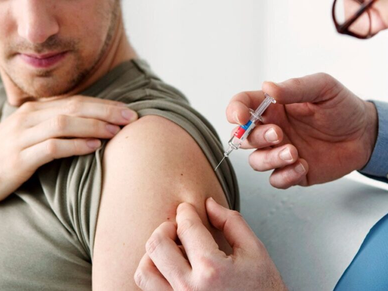

Кодирование от алкоголизма на дому
в Одессе
Гаранитированное прекращение потребления алкоголя на длительный срок при помощи кодирования
Работаем в Одессе, Киеве, Львове, Харькове, Днепре

Работаем в Одессе, Киеве, Львове, Харькове, Днепре
Кодирование от алкоголизма - это медицинская процедура, при которой используются препараты или имплантаты, чтобы создать отвращение к алкоголю и помочь прекратить его употребление. Это помогает контролировать желание к алкоголю и предотвращает обострения зависимости. Однако, кодирование не является единственным методом лечения и должно проводиться под наблюдением врача и для успешных результатов.
Медикаментозное кодирование - это процедура, при которой врач назначает препараты, вызывающие негативные реакции при употреблении алкоголя. Обычно используется дисульфирамоподобный препарат. При взаимодействии с алкоголем он вызывает тошноту, рвоту и неприятные ощущения. Это создает отвращение к алкоголю и помогает контролировать его употребление. Процедура проводится под наблюдением врача и может быть частью комплексного лечения алкогольной зависимости.
Кодирование работает путем использования препаратов, которые вызывают неприятные физические реакции при употреблении алкоголя. Когда человек, пройдя процедуру, пьет алкоголь, он испытывает негативные симптомы, такие как тошнота и рвота. Такие неприятные ощущения создают условия для формирования отвращения к алкоголю и помогают снизить желание к его употреблению. Это позволяет контролировать потребление алкоголя и помогает преодолеть зависимость.
Стоимость вывода из запоя x гривен. Цена включает в себя: приезд врача, консультация, снятие ЭКГ, давления, пульсоксиметрия, седация пациента и ...
Анонимно

"Доктор Алексей - великолепный врач-нарколог! Его профессионализм и эмпатия помогли мне пережить трудные моменты и обрести новую жизнь."
Анонимно
"Спасибо, доктор Алексей, за вашу неоценимую помощь в борьбе с наркотической зависимостью. Вы истинный спаситель!"
Анонимно
"Если не врач Алексей, то я бы никогда не справился. Он не только лечит, но и внушает веру в себя. Благодарю его от всей души!"
Анонимно
"Признательность и уважение к врачу Алексею за его профессионализм и теплоту. Он сделал невозможное возможным - я снова живу!"
Анонимно
"Доктор Сергей - настоящий гений! Его опыт и забота помогли мне преодолеть зависимость и вернуться к нормальной жизни."
Анонимно
"Спасибо, доктор Сергей, за ваше непревзойденное мастерство и поддержку. Вы - настоящий герой, спасший меня от ужасной зависимости."
Анонимно
"Доктор Сергей - исключительный профессионал и человек с золотым сердцем. Я благодарен ему за его бесценную помощь и доброту."
Анонимно
"Благодаря доктору Сергею я смог преодолеть свои слабости и вернуться к нормальной жизни. Он настоящий врач-герой, спаситель в моих глазах."
Отзыв можно оставить после оказания вам услуги
Приезд в течении 60 минут от момента поступления заявки
В таких городах как Одесса, Киев, Львов, Харьков, Днепр
Мы оказываем профессиональную доказательную медицинскую помощь. Гарантией является наше имя.
Мы кодируем до 5 лет в зависимости от желания пациента, а так же его здоровья.
Номер телефона:
+380 (50) 021 69 57
Адрес: г. Одесса ул. Тираспольская 1
Telegram: (ссылка)
График работы: Круглосуточно

2013-2023 Одесса. All right reserved